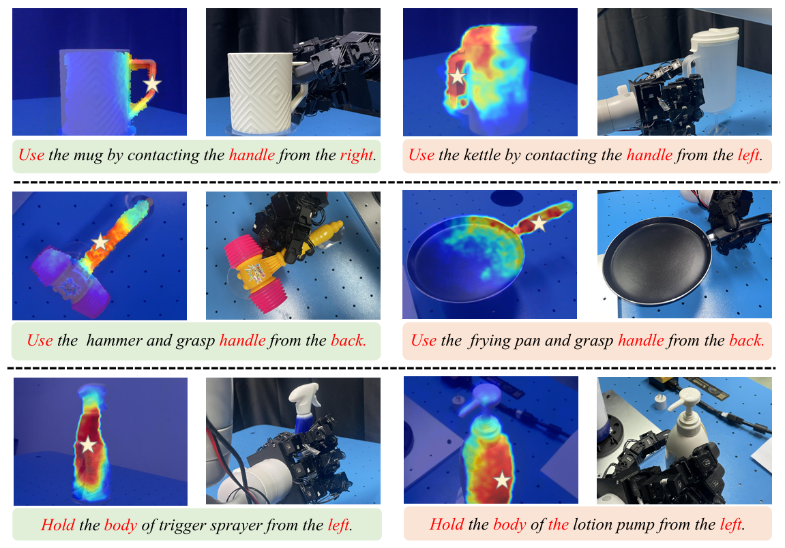
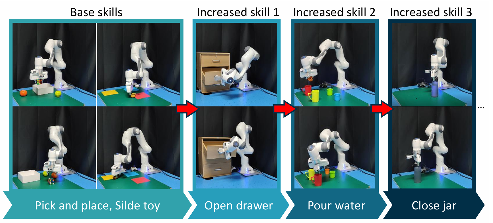

|
Yi-Lin Wei | 卫奕霖 I am a third-year Ph.D. student in computer science at Sun Yat-Sen University, at iSEE Lab, advised by Prof. Wei-Shi Zheng. Before that, I obtained my M.S. in control science and engineering from Sortheast University advised by Prof. Dan Niu. And I obotained B.S. in automation from Northeastern University. |

|
ResearchI'm interested in robotics AI, specially in dexterous grasp and manipulation. Additionally, I maintain a strong interest in and active engagement with humanoid robotics, MLLM-driven manipulation and dexterous hand hardware. |
|
|
OmniDexGrasp: Generalizable Dexterous Grasping via Foundation Model and Force Feedback
Yi-Lin Wei*, Zhexi Luo*, Yuhao Lin, Mu Lin, Zhizhao Liang, Shuoyu Chen, Wei-Shi Zheng under review, 2025 arXiv page / project page / code A generalizable dexterous framework that achieves omni-capabilities in user prompting, dexterous embodiment, and grasping tasks. |
|

|
AffordDexGrasp: Open-set Language-guided Dexterous Grasp with Generalizable-Instructive Affordance
Yi-Lin Wei*, Mu Lin*,, Yuhao Lin, Jian-Jian Jiang, Xiao-Ming Wu, Liang-An Zeng, Wei-Shi Zheng ICCV, 2025 arXiv page / project page / code Open-Set Language-guided dexterous grasp based on generalizable-instructive Affordance. |

|
Grasp as You Say: Language-guided Dexterous Grasp Generation
Yi-Lin Wei, Jian-Jian Jiang, Chengyi Xing, Xian-Tuo Tan, Xiao-Ming Wu, Hao Li, Mark Cutkosky, Wei-Shi Zheng NeurIPS, 2024 arXiv page / project page / code A novel task enables robots to perform dexterous grasping based on human commands. |
|
|
TypeTele: Releasing Dexterity in Teleoperation by Dexterous Manipulation Types
Yuhao Lin*, Yi-Lin Wei*, Haoran Liao, Mu Lin, Mu Lin, Chengyi Xing, Hao Li, Dandan Zhang, Mark Cutkosky, Wei-Shi Zheng CoRL, 2025 arXiv page / project page / code A novel task enables robots to perform dexterous grasping based on human commands. |

|
Dexterous Grasp Tranformer
Guohao Xu*, Yi-Lin Wei*, Dian Zheng, Xiao-Ming Wu, Wei-Shi Zheng CVPR, 2024 arXiv page / project page / code A novel discriminative framework for dexterous grasp generation by formulating it as a set prediction task. |
|
|
TacCap: A Wearable FBG-Based Tactile Sensor for Seamless Human-to-Robot Skill Transfer
Chengyi Xing*, Hao Li*, Yi-Lin Wei, Tian-Ao Ren, Tianyu Tu, Yuhao Lin, Elizabeth Schumann, Wei-Shi Zheng, Mark Cutkosky, IROS, 2025 arXiv page / Project page A wearable FBG-Based tactile sensor which can transfered form human to robot. |

|
ChainHOI: Joint-based Kinematic Chain Modeling for Human-Object Interaction Generation
Liang-An Zeng*, Guo-Hong Huang*, Yi-Lin Wei, Shengbo Gu, Yu-Ming Tang, Jingke Meng#, Wei-Shi Zheng# CVPR, 2025 arXiv page Human-Object interaction generation by joint-based kinematic chain modeling |

|
Single-view Scene Point Cloud Human Grasp Generation
Yan-Kang Wang, Chengyi Xing, Yi-Lin Wei, Xiao-Ming Wu, Wei-Shi Zheng CVPR, 2024 arXiv page A novel task of generating human grasps based on single-view scene point clouds. |
|

|
iManip: Skill-Incremental Learning for Robotic Manipulation
Zexin Zheng, Jia-Feng Cai Xiao-Ming Wu, Yi-Lin Wei, Yu-Ming Tang, Wei-Shi Zheng# ICCV, 2025 arXiv page Endow the robots with the ability to learn new manipulation skills based on the previous learned knowledge without re-training. |
|
|
Rethinking Bimanual Robotic Manipulation: Learning with Decoupled Interaction Framework.
Jian-Jian Jiang, Xiao-Ming Wu, Yi-Xiang He, Liang-An Zeng, Yi-Lin Wei, Dandan Zhang, Wei-Shi Zheng ICCV, 2025 arXiv page A decoupled interaction framework that categorizes bimanual manipulation tasks into non-collaborative and collaborative types, and performs both effectively. |
|
|
Real-to-Sim Grasp: Rethinking the Gap between Simulation and Real World in Grasp Detection
Jia-Feng Cai , Zi-Bo Chen, Xiao-Ming Wu, Jian-Jian Jiang, Yi-Lin Wei, Wei-Shi Zheng CoRL, 2024 paper page / project page A new Real-to-Sim framework for 6-DoF Grasp detection, with the key insight of bridging sim-to-real gap in a real-to-sim way. |

|
An Economic Framework for 6-DoF Grasp Detection
Xiao-Ming Wu*, Jia-Feng Cai*, Jian-Jian Jiang Dian Zheng, Yi-Lin Wei, Wei-Shi Zheng ECCV, 2024 arXiv page / code A new economic grasping framework for 6-DoF grasp detection to economize the training resource cost and meanwhile maintain effective grasp performance. |
Academic ServicesReviewer for CVPR 2025, ICCV 2025, NeurIPS 2024/2025, ICML 2025, ICLR 2025/2026. |
|
|